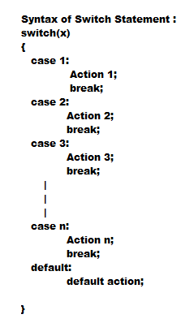
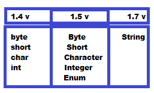
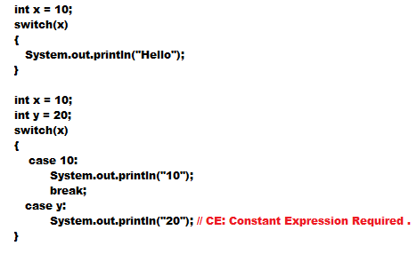

SWITCH
- If several options are available then it is never recommended to use if-else, we should go for switch statement .

- The valid argument types for switch statement are byte,short,char,int . But this rule is applicable until 1.4 version .
- From 1.5 onwards corresponding wrapper class and enum types also allowed .

- Switch is the only place where curly braces are mandatory .
- Within the switch both case and default are optional.
- Every statement inside switch should be some case or default statement. We can not write other statement inside switch .
- Every case label should be compile time constant . If we are taking variable as case lebel then we will get compile time error .
- Duplicate case label are not allowed .

- If we make y as final then we won't get compile time error .